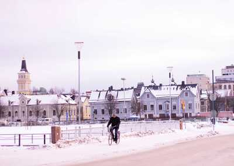
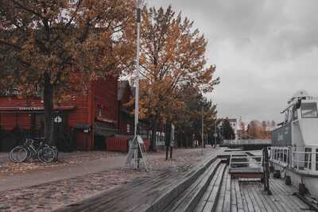

Oulu
Oulu on Suomen pääkaupunki ja Uudenmaan maakuntakeskus. Se sijaitsee Suomenlahden pohjoisrannalla Uudenmaan maakunnan keskiosassa. Helsingin naapurikunnat ovat lännessä Espoo, pohjoisessa Vantaa ja idässä Sipoo. Kaupungissa on 657 674 asukasta.[2] Helsingin keskustaajama ulottuu usean naapurikunnan alueelle, kuten Espooseen ja Vantaalle. Laajemmalla Helsingin seudun metropolialueella on 1 572 928 asukasta.[7]



